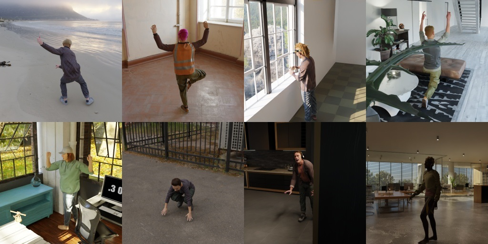
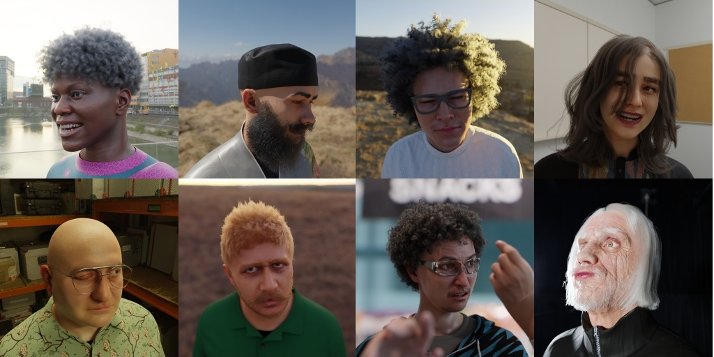

Synthetic Datasets
Our method is trained exclusively on synthetic data, generated using a conventional computer graphics pipeline. The three datasets used in the paper are available to download here.

SynthBody can be used for tasks such as skeletal tracking and body pose prediction.

SynthFace can be used for tasks such as facial landmark and head pose prediction or face parsing.

SynthHand can be used for tasks such as hand pose prediction or landmark regression.